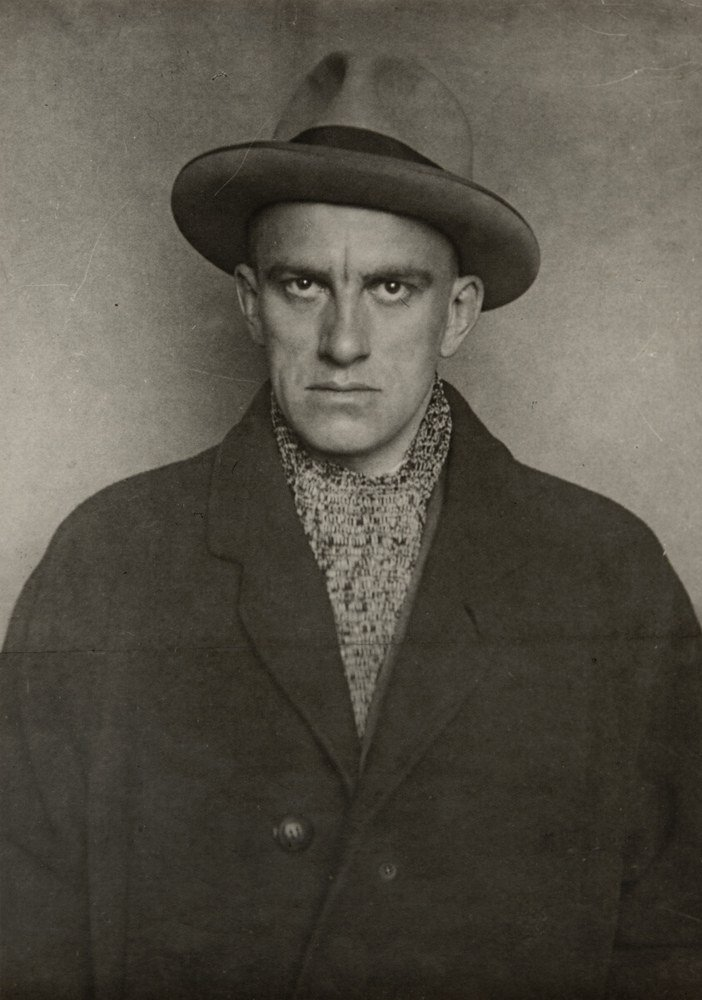

Vladimir Mayakovsky
Alexander Rodchenko · 1924, printed 1940s · Gelatin silver print · 23.8 × 16.6 cm · Art Institute of Chicago
In copyright. Look and learn: shown for study, not for download.
Rodchenko's first photographs were a series of six portraits of the poet Vladimir Mayakovsky, and he used the poet's face on book covers from 1925 to 1929. After Mayakovsky's death in 1930 he was pressed into turning several of them into commemorative images. This print was made in the 1940s. Rodchenko joined the October group of artists in 1928 and was expelled three years later, accused of formalism.